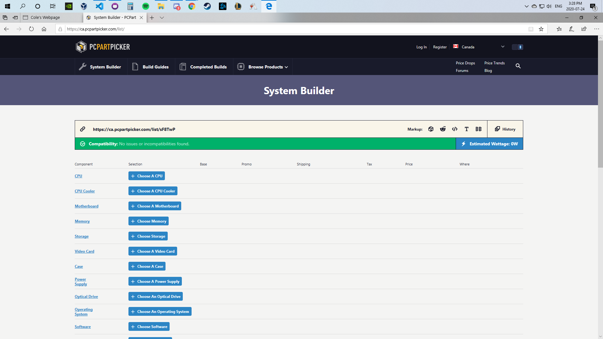

A paragraph inside of a header class.
Here you will find projects I have worked on.
This was my first PC build. July 15, 2020
tldr
So for a while now I have been wanting to build my own PC and with my current PC slowing down due to age I thought why not now. So I started by going to this great website called PC Part Picker and looking up some reviews on Youtube for recommened parts ( LinusTechTips has some reviews and PC build videos that were very helpful). After I had some idea of what I wanted I started building my PC with the PC Part Picker website.  Here you can pick all the components of the PC, see prices, check compatability, and provides a link if you would like to share the build. After choosing all my componets I ordered them and waited for them to arrive. Actually building the PC was both very fun and terrifying as I had never done this before. I was cautious and scaried that I would break one of the componets, but everything turned out fine. So first thing I did was put on my anti-static wristband to make sure that I did not damage any of the components and clean off my table. Then I took out my motherboard and started to get to work. First thing I did was install the RAM, I used a pair of 8GB DDR4 RAM modules from Corsair. I consulted the documentation on what slots to populate on the mother board first, in my case it was the 2nd and 4th slot. Next I installed the CPU. PCPartPicker will tell you if the CPU and motherboard are compatible but if you don't know there are 2 different types of CPU design. AMD that has the pins on the actuall CPU and Intel that has the pins on the motherboard. Just make sure to check that the motherboard works with your CPU. The CPU is installed by first pulling up the tension arm near the CPU socket. Next I put the CPU into the socket, there should be no force involved. Next once placed correctly pull down the tension arm to the previous position. The CPU should now be firmly in place. After that I installed my storage device, I used Intel's 660p series 1TB m.2 ssd. I could not get over the fact that drive was so small. Anyway the way that the drive attaches uses it's own m.2 slot and some drives are longer than others. Luckily I did not have to change position of the pin, I just had to screw down the drive. Next was to attach the CPU cooler, I went with the stock CPU cooler provided by AMD as the one I ordered was incompatible with my motherboard (something to use for my next build I guess) First, apply some thermal compound to top of the CPU (should be about the size of a grain of rice) then I put the cooler on top and attached the clips that hold the heatsink and fan in place. Final thing was to plug in the fan pins to the motherboard, somewhere near the CPU socket on the motherboard should be a 4 pin (male) header, this may be labled "CPU_FAN" or something similar. If I was confused I would just check the documentation that came with the motherboard. Next was attaching the motherboard to the case.